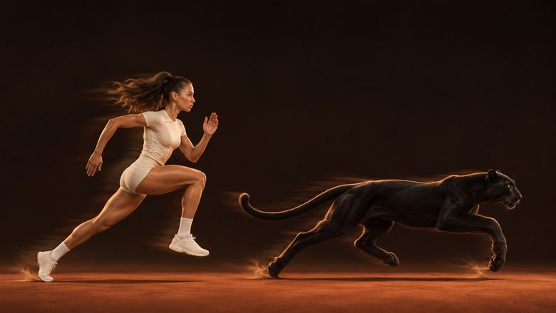

Stories / Body & movement
Why humans
sprint.
A brief ground contact, a powerful push-off: your whole body works together in a sprint.

At a glance
At top speed, faster runners generate greater support force per kilogram of body mass. [Weyand et al., 2000]
Sprinting brings your legs, trunk and arms into play together. [Dorn, Schache & Pandy, 2012]
Studies using running and cycling sprints show that sprint training can improve strength and endurance. [Markovic et al., 2007] [Gillen et al., 2016]
Your sprint times become comparable when the start procedure, timing method and conditions match. [Haugen & Buchheit, 2016]
You rarely need your top speed in everyday life. Perhaps your last sprint was for a bus. Perhaps you chased a ball across a playing field. Or perhaps you cannot remember the last occasion. The movement is still waiting for you on the track: a clear stretch, a line, your own acceleration.
A sprint lets you feel your body at work. You push off, raise your knee and place the next foot. Every contact with the ground changes your run. What makes you fast can be measured, and trained.
What makes you fast in a sprint
At top speed, faster people push harder against the ground relative to their body weight. Weyand and colleagues compared people running on a treadmill at their individual top speeds. The faster runners generated greater support forces relative to body weight. The time taken to bring the leg back through the air for the next step, however, did not differ. [Weyand et al., 2000]

Force needs ground contact
You accelerate when the forward impulse during ground contact outweighs the braking impulse. Push your foot against the ground and a force acts back on you: the ground reaction force. Its magnitude and duration determine the impulse, the effect of force over the contact time. To accelerate, the forward component must prevail; the support force also carries you against gravity. [Haugen, McGhie & Ettema, 2019]
Short contact, effective steps
A short ground contact only helps you run fast if you transfer enough force during it. At high speed, your foot has little time on the ground. Simply lifting it again as quickly as possible does not solve that task. [Weyand et al., 2000]
Your speed is step length multiplied by step frequency, the number of steps per second. The two are connected. Reaching your foot far ahead does not automatically create a longer effective step. Haugen, McGhie and Ettema explain why simple models cannot provide a universal technique rule. [Haugen, McGhie & Ettema, 2019]

Cheetahs and humans
The cheetah is the fastest land animal, but hunting also demands braking and agility. Wilson and colleagues recorded speeds of up to 93 km/h in wild cheetahs in Botswana. Most hunting runs were slower. Acceleration and changes of direction mattered alongside peak speed. [Wilson et al., 2013]
Human strength lies in running for longer. Bramble and Lieberman describe us as poor sprinters compared with many four-legged animals, but remarkable endurance runners. They link this to anatomical and physiological features that make sustained running possible. [Bramble & Lieberman, 2004]
What happens inside your body
During a sprint, your glutes, quadriceps, hamstrings, calves and hip flexors work together with your trunk and arms. Dorn, Schache and Pandy investigated the coordination of the leg muscles using movement data and a muscle model. The calves contribute to support force; at high speeds, the hip flexors, glutes and hamstrings drive the legs forcefully through the air. [Dorn, Schache & Pandy, 2012]
The hamstrings slow the leg before landing and continue working during early ground contact. They prepare the next step while the foot is still airborne. Liu and colleagues describe the high demands on these muscles during the transition from swing to ground contact. [Liu et al., 2017]
Fast fibres need rapid energy
Fast-twitch muscle fibres contribute to sprinting. These type II fibres can contract rapidly. Greenhaff and colleagues examined muscle samples from six people before and after a 30-second treadmill sprint. Type II fibres broke down more glycogen, stored carbohydrate, and more phosphocreatine, a rapid energy reserve, than the slower type I fibres. [Greenhaff et al., 1994]
Your muscles need a large amount of ATP in a short time during a sprint. ATP is the energy carrier cells can use directly. To supply it, muscles draw on stored high-energy phosphates and break down carbohydrates. Aerobic energy production, using oxygen, also contributes from the beginning. The systems operate together; duration and intensity determine their relative shares. [Gastin, 2001]
Growth hormone stays elevated afterwards
A sprint stimulates growth hormone release. In the study by Stokes and colleagues, it remained elevated for 90–120 minutes after a single maximal 30-second cycling sprint, up to two hours. The study involved nine men. [Stokes et al., 2002]
Why adults sprint less often
Adult life often provides fewer reasons to sprint. As children, chasing games, balls and races constantly give us a reason to run fast. Later, a day spent between a desk, the shops and the journey home may contain no fast running at all.
Even regular training does not completely prevent age-related performance loss. Hendrickse and colleagues followed masters sprinters over ten years. The muscle characteristics they examined were maintained, while sprint and jump performance declined. The researchers attributed the decline to a reduced ability to produce force. Your school personal best therefore describes a different body at a different time. Today's run gives you a new starting point. [Hendrickse et al., 2025]
What sprint training can do for strength, endurance and bones
Sprint training can measurably improve strength and endurance. Higher bone density has also been measured in older sprinters. [Markovic et al., 2007] [Gillen et al., 2016] [Piasecki et al., 2018]
+10% strength after ten weeks
Ten weeks of running sprint training produced a 10% increase in squat-test strength. In Markovic and colleagues' study, 30 young, physically active men trained three times a week with maximal runs over 10–50 metres. The researchers measured maximal isometric squat strength: participants pushed against an immovable resistance while in a squat position. [Markovic et al., 2007]
+19% endurance in ⅕ of the time
Brief cycling sprints produced a 19% increase in peak oxygen uptake after twelve weeks. Gillen and colleagues studied previously inactive men. The sprint group trained three times a week, performing 3 × 20-second maximal cycling sprints with two minutes of easy cycling between efforts. Including the warm-up and cool-down, each session lasted ten minutes. [Gillen et al., 2016]
The sprint group used ⅕ of the time for similar endurance gains: ten rather than fifty minutes per session. The comparison group cycled at a moderate intensity for 45 minutes, plus a warm-up and cool-down. Peak oxygen uptake rose by 19% in both groups. Insulin sensitivity also improved similarly in both groups. [Gillen et al., 2016]
+14% hip bone density in masters sprinters
In an adjusted group comparison, masters sprinters had 14% higher hip bone density than non-athletic people of a similar age. Piasecki and colleagues compared 38 masters sprinters with a mean age of 71 with 59 non-athletic controls. The analysis accounted for sex, age, height, body composition and jump power. The figure describes a difference between groups, rather than a gain following a training programme. [Piasecki et al., 2018]
How to start again
You can develop strength, technique and sprint endurance as an adult. Haugen and colleagues' training review describes sprint runs, technique work and strength training as ways to do so. A few deliberate runs can help you reconnect with acceleration, rhythm and speed. [Haugen et al., 2019]
Find a clear, level stretch with room to slow down. Warm up, begin with controlled runs and allow recovery between sessions. Increase the load gradually and seek medical advice before training if you have health concerns. [WHO guidelines] [Haugen et al., 2019]
How to compare your sprint times
A sprint time only becomes meaningful when its measurement conditions are known. The start procedure, timing method, wind and other external conditions affect the result. Haugen and Buchheit show that differences in measurement setup can exceed training improvements achieved over years. [Haugen & Buchheit, 2016]
Hand times cannot be converted into electronic times using a fixed correction. Hetzler and colleagues found errors in both directions. Their distribution prevented a reliable general correction factor. [Hetzler et al., 2008]
Compare several runs under conditions that are as similar as possible. Use the same start procedure and timing method, and note wind or other changes. That makes it easier to judge whether your running has improved. Your time becomes a reference for the next attempt. [Haugen & Buchheit, 2016]
Frequently asked questions
What makes a person fast at sprinting?
At top speed, faster runners push harder against the ground relative to their body weight. In Weyand and colleagues’ study (2000), they generated greater support forces relative to body weight; their legs did not return faster through the air.
Which muscles work during a sprint?
Your glutes, quadriceps, hamstrings, calves and hip flexors work together with your trunk and arms. The leg muscles support the body and move the legs into position for the next step, as shown by Dorn, Schache and Pandy (2012).
What happens to hormones during a sprint?
A sprint stimulates growth hormone release. In Stokes and colleagues’ study, it remained elevated for 90–120 minutes after a single maximal 30-second cycling sprint, up to two hours. The study involved nine men.
Can I train for sprinting again as an adult?
Yes. You can develop strength, technique and sprint endurance. Haugen and colleagues’ training review (2019) describes sprint runs, technique drills and strength training as ways to do so.
Does sprinting replace every other type of training?
The studies described do not establish that sprinting replaces every other type of training. Gillen and colleagues (2016) compared brief cycling sprints with moderate cycling and found similar endurance gains.
Does one faster time prove training progress?
One faster time does not prove training progress. To compare several runs, the start procedure, timing method and conditions need to match (Haugen & Buchheit, 2016).
Sources
- Weyand, Sternlight, Bellizzi & Wright (2000)
Faster top running speeds are achieved with greater ground forces not more rapid leg movements.
DOI: 10.1152/jappl.2000.89.5.1991
Abstract reviewed - Haugen, McGhie & Ettema (2019)
Sprint running: from fundamental mechanics to practice, a review.
DOI: 10.1007/s00421-019-04139-0
Abstract reviewed - Haugen, Seiler, Sandbakk & Tønnessen (2019)
The Training and Development of Elite Sprint Performance.
DOI: 10.1186/s40798-019-0221-0
Full text, especially mechanics and training principles - Wilson et al. (2013)
Locomotion dynamics of hunting in wild cheetahs.
DOI: 10.1038/nature12295
Abstract reviewed - Bramble & Lieberman (2004)
Endurance running and the evolution of Homo.
DOI: 10.1038/nature03052
Abstract reviewed - Dorn, Schache & Pandy (2012)
Muscular strategy shift in human running: dependence of running speed on hip and ankle muscle performance.
DOI: 10.1242/jeb.064527
Abstract and publisher full-text excerpt, especially muscle modelling and motion data - Greenhaff et al. (1994)
The metabolic responses of human type I and II muscle fibres during maximal treadmill sprinting.
DOI: 10.1113/jphysiol.1994.sp020238
Abstract reviewed; muscle samples before and after a treadmill sprint - Markovic, Jukic, Milanovic & Metikos (2007)
Effects of sprint and plyometric training on muscle function and athletic performance.
DOI: 10.1519/R-19535.1
Abstract and full-text copy, especially strength testing, training and results - Piasecki et al. (2018)
Hip and spine bone mineral density are greater in master sprinters, but not endurance runners compared with non-athletic controls.
DOI: 10.1007/s11657-018-0486-9
Full text, especially the sample and adjusted group comparison - Gastin (2001)
Energy system interaction and relative contribution during maximal exercise.
DOI: 10.2165/00007256-200131100-00003
Abstract reviewed - Stokes, Nevill, Hall & Lakomy (2002)
The time course of the human growth hormone response to a 6 s and a 30 s cycle ergometer sprint.
DOI: 10.1080/02640410252925152
Abstract reviewed - Liu, Sun, Zhu & Yu (2017)
The late swing and early stance of sprinting are most hazardous for hamstring injuries.
DOI: 10.1016/j.jshs.2017.01.011
Full-text research discussion reviewed - Hendrickse, Hutz, Korhonen & Degens (2025)
A 10-Year Longitudinal Study of Muscle Morphology and Performance in Masters Sprinters.
DOI: 10.1002/jcsm.13822
Abstract reviewed - Bull et al. (2020)
World Health Organization 2020 guidelines on physical activity and sedentary behaviour.
DOI: 10.1136/bjsports-2020-102955
Full text, especially starting activity and increasing the load - Gillen et al. (2016)
Twelve Weeks of Sprint Interval Training Improves Indices of Cardiometabolic Health Similar to Traditional Endurance Training despite a Five-Fold Lower Exercise Volume and Time Commitment.
DOI: 10.1371/journal.pone.0154075
Full text, methods, results and limitations - Haugen & Buchheit (2016)
Sprint Running Performance Monitoring: Methodological and Practical Considerations.
DOI: 10.1007/s40279-015-0446-0
Abstract reviewed - Hetzler, Stickley, Lundquist & Kimura (2008)
Reliability and accuracy of handheld stopwatches compared with electronic timing in measuring sprint performance.
DOI: 10.1519/JSC.0b013e318185f36c
Abstract reviewed